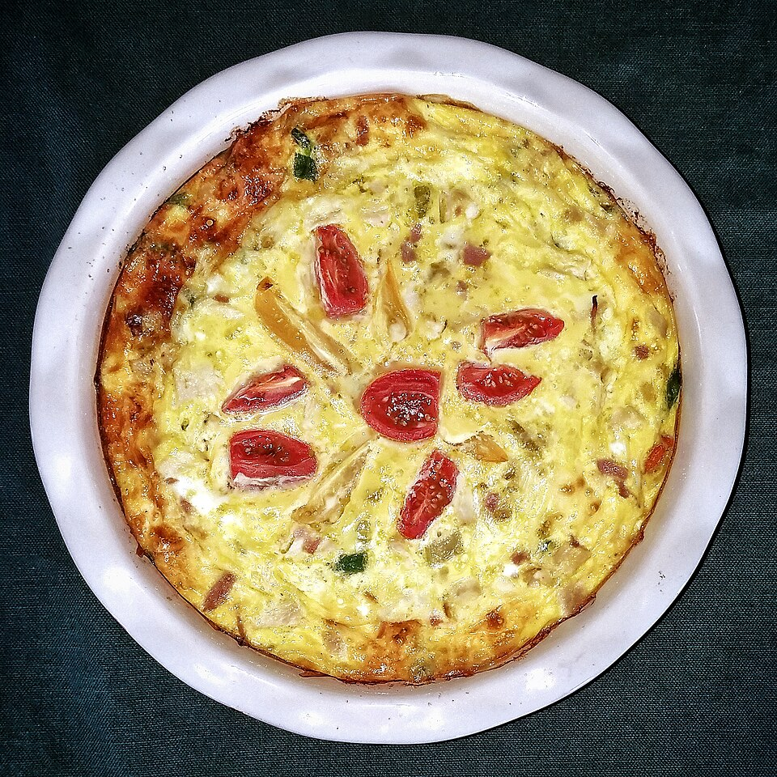

Tortas salgadas
Quiche de tomate seco e peito de peru

Ingredientes
- Massa: 2 xícaras (chá) de farinha, 1 ovo, 2 colheres (sopa) de água fria, 150 g de manteiga, sal
- Recheio: 1 colher (sopa) de azeite, 200 g de peito de peru em cubos, 100 g de tomate seco, 4 ovos, noz-moscada, 200 ml de creme de leite fresco, ½ xícara (chá) de parmesão, sal e pimenta
Modo de preparo
- Misture a massa, gele 30 min e forre quicheira 22 cm.
- Doure o peru; espalhe com o tomate seco. Bata ovos, noz-moscada, creme, parmesão, sal e pimenta; despeje e asse 35 minutos.
Observação
Creme fresco pode ser de lata ou caixinha.